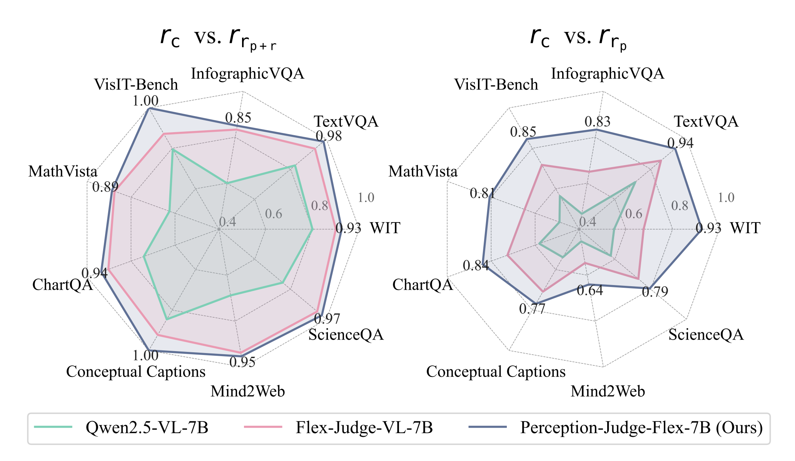
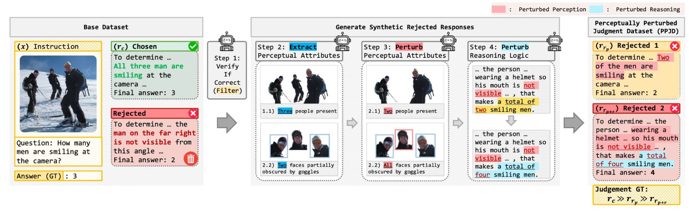

Motivation
Can Multimodal Judges Really Judge What They See?
Multimodal LLMs are replacing costly human annotations as automated evaluators.
However, judging vision-language responses requires more than fluent reasoning: a judge must verify whether each response is grounded in the image.
Key Question: Do MLLM judges actually use visual evidence when evaluating responses?
Problem
The Core Problem: Perceptual Judgment Bias
Definition: A multimodal judge fails to penalize a response whose visual claims contradict the image.
Key distinction from prior work: This is not simply poor visual perception or hallucination. It is a judgment-specific bias where the judge fails to connect perception with evaluation.

1. Insufficient Perceptual Capability
The judge itself misperceives the image, leading it to reward a visually incorrect answer simply because it sounds logical.
2. Response-Anchored Judgment Reasoning
The judge can perceive the image correctly, but still follows the response text during judgment, ignoring its own accurate perception.
Analysis 1: Bias Decomposition
The Main Error Is Not Just Poor Perception
Decomposing perceptual judgment errors reveals that anchoring on textual responses is a more significant issue than failing to see the image correctly.
| Model | Acc. ↑ | Error ↓ | ||
|---|---|---|---|---|
| Mode (a)Insufficient perception | Mode (b)Response anchoring | Overall | ||
| Qwen2.5-VL-7B | 69.5% | 14.0% | 16.4% | 30.5% |
| Flex-Judge-VL-7B | 76.6% | 9.4% | 14.1% | 23.5% |
| Perception-Judge-Flex-7B (Ours) | 85.7% | 6.7% | 7.6% | 14.3% |
Analysis 2: Controlled Perturbation Study
Fluent Reasoning Can Hide Visual Errors
Comparing correct responses \(r_c\) with perturbed negative responses reveals a key vulnerability in current judges.

Left: High Accuracy
The response contains both visual and reasoning errors, making it easier for judges to reject.
Right: Accuracy Drops
The response contains only a visual error, while the reasoning remains fluent and plausible.
Dataset
Dataset Generation: Perceptually Perturbed Judgment Dataset

For each input:
\(r_c\): perceptually and logically correct response
\(r_{rp}\): perceptually incorrect but reasoning-preserved response
\(r_{rp+r}\): both perceptually and logically incorrect response
Supervision: Explicit ordering: \(r_c \succ r_{rp} \succ r_{rp+r}\)
| PPJD Statistics | |
|---|---|
| Source | MMPR v1.2 |
| Training set | 3k high-quality pairs |
| Response set | \(r_c\), \(r_{rp}\), \(r_{rp+r}\) |
| Supervision type | Explicit triplet ordering |
Method
Training Objective - Batch-Ranking Reward with GRPO

Goal & Optimization
Train the judge to output the global target order. We use GRPO to optimize the judge with a verifiable reward.
Reward Design
Format reward: Validates the judgment output structure.
Batch-ranking reward: Measures closeness to the target order using Levenshtein distance.
Results
Results on MLLM-as-a-Judge Benchmark
MLLM-as-a-Judge: Assessing Multimodal LLM-as-a-Judge with Vision-Language Benchmark (ICML 2024 Oral)
| Model | Single Score ↑ | Pairwise (w/ Tie) ↑ | Pairwise (w/o Tie) ↑ | Batch Ranking ↓ |
|---|---|---|---|---|
| Flex-Judge-VL-7B (Baseline) | 0.404 | 0.514 | 0.623 | 0.517 |
| Perception-Judge-Flex (Ours) | 0.466 | 0.520 | 0.645 | 0.505 |
| Qwen3-VL-4B-Thinking (Baseline) | 0.419 | 0.543 | 0.663 | 0.498 |
| Perception-Judge-Flex (Ours) | 0.457 | 0.554 | 0.691 | 0.444 |
Qualitative Examples


Citation
BibTeX
If you find this work useful, please cite the paper as follows.
@inproceedings{perceptionjudge2026,
title={Mitigating Perceptual Judgment Bias in Multimodal LLM-as-a-Judge via Perceptual Perturbation and Reward Modeling},
author={Park, Seojeong and Choi, Jiho and Kang, Junyong and Lee, Seonho and Shin, Jaeyo and Shim, Hyunjung},
booktitle={Proceedings of the 43rd International Conference on Machine Learning (ICML)},
year={2026}
}